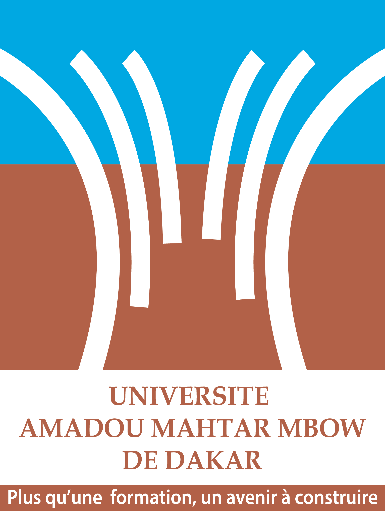
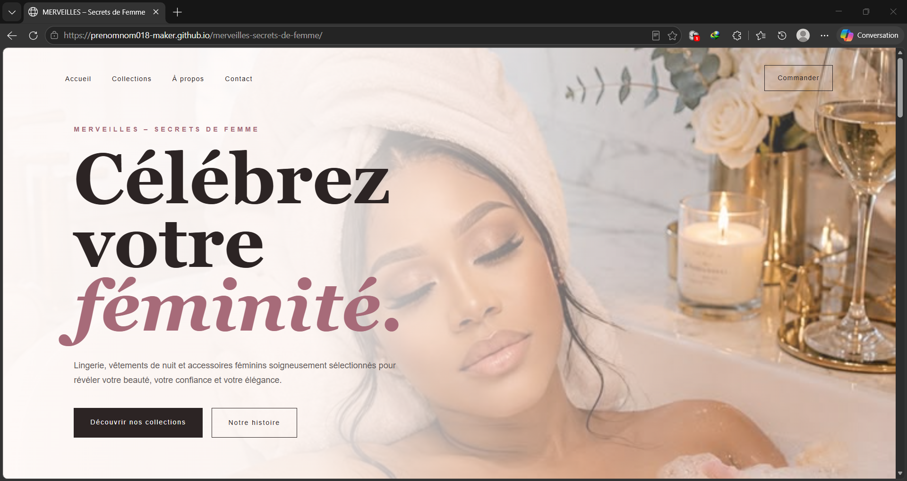
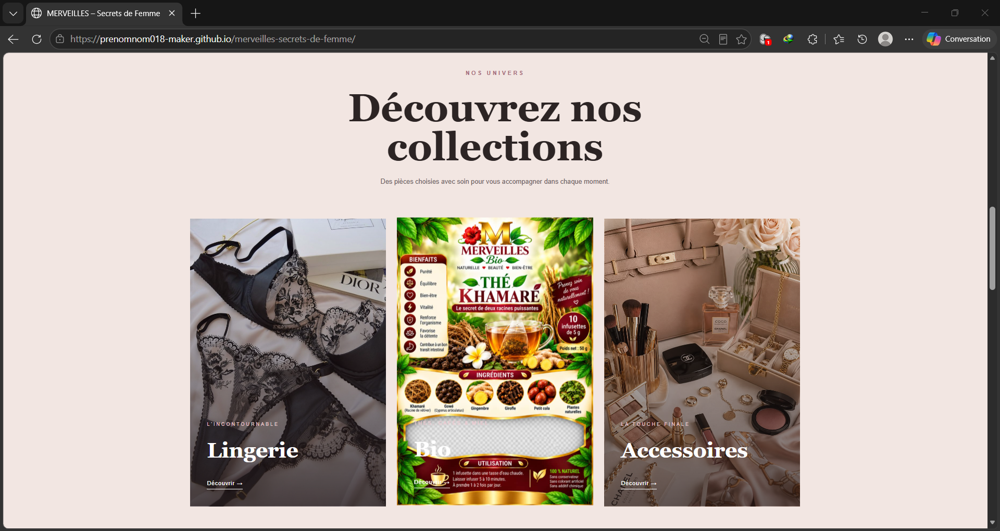
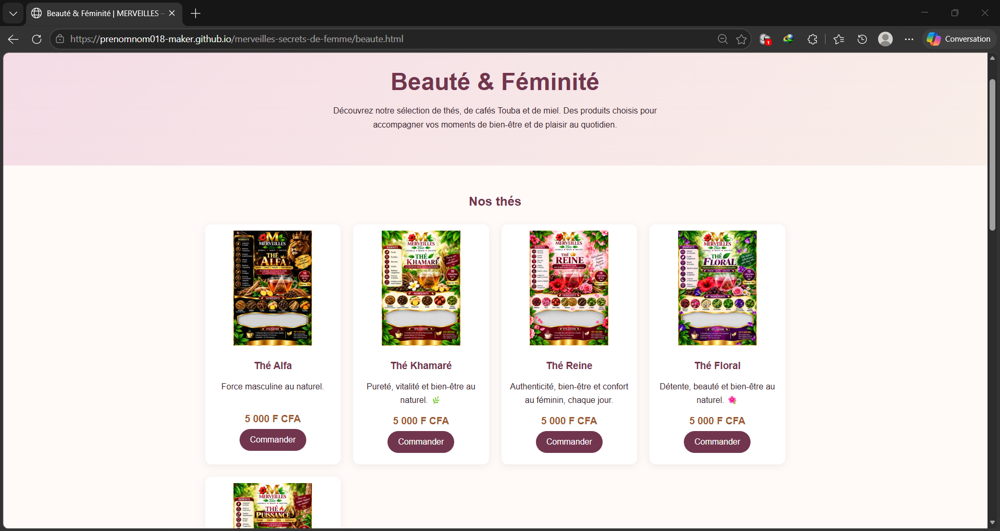
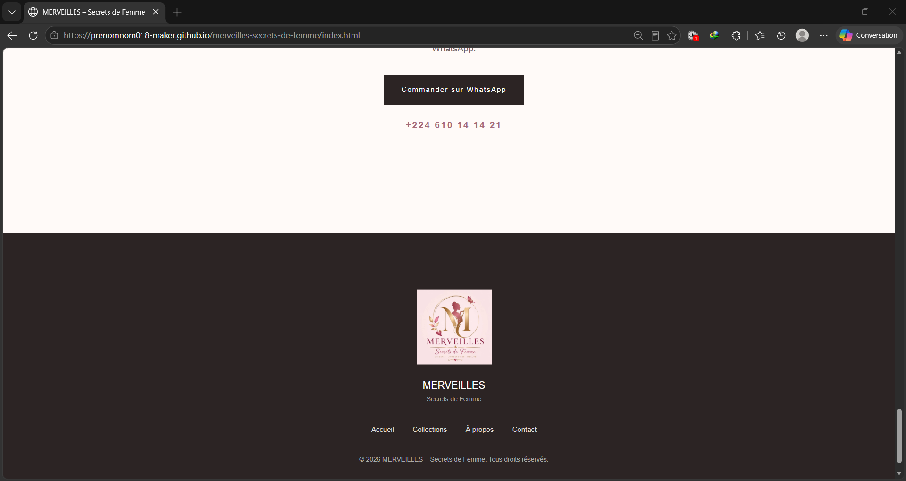
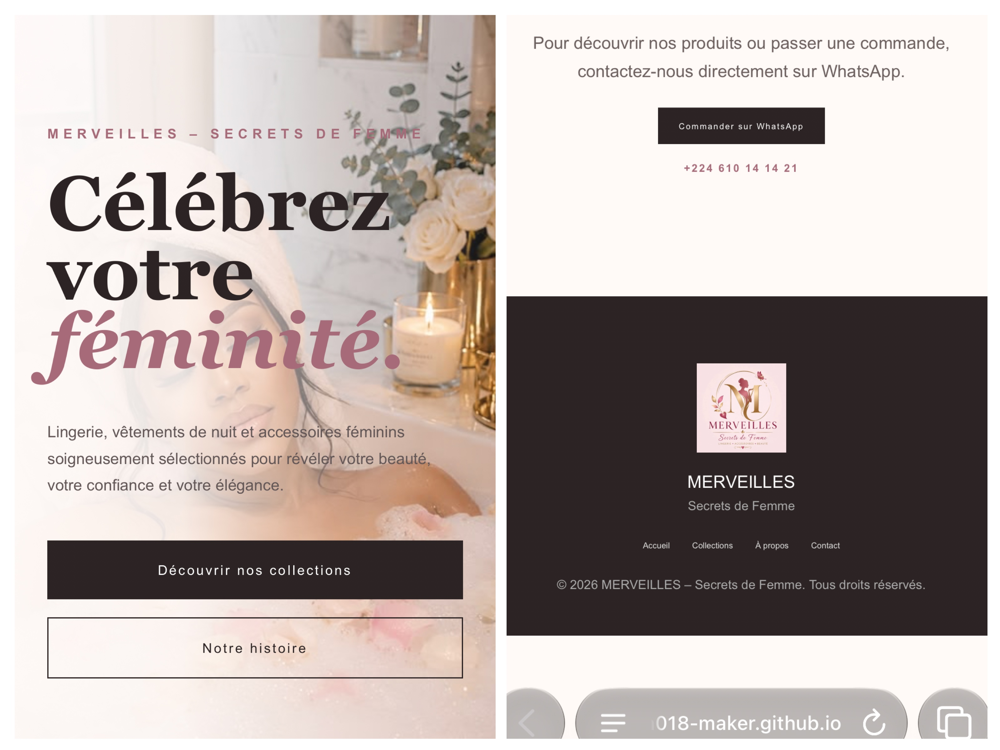
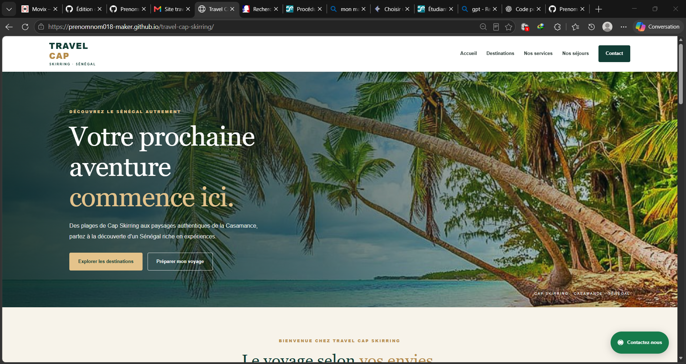
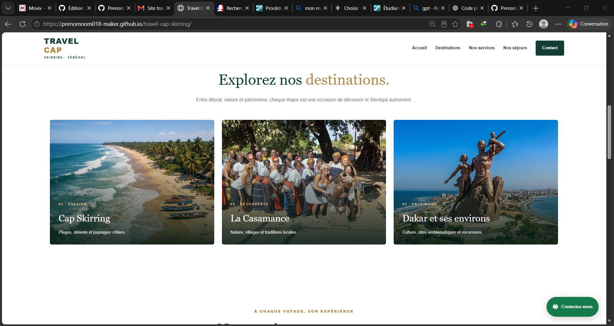
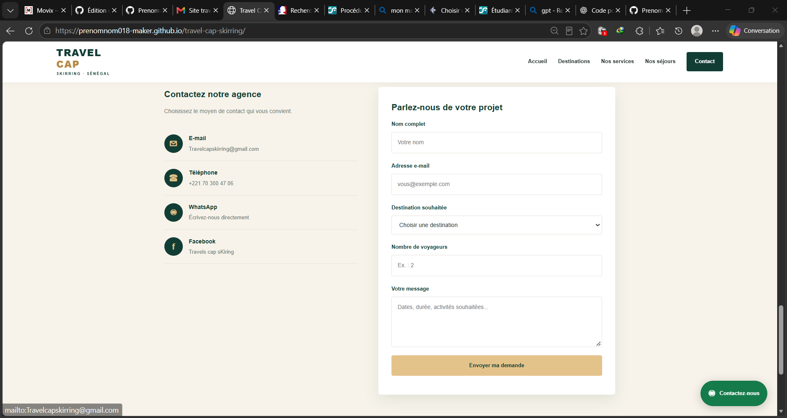
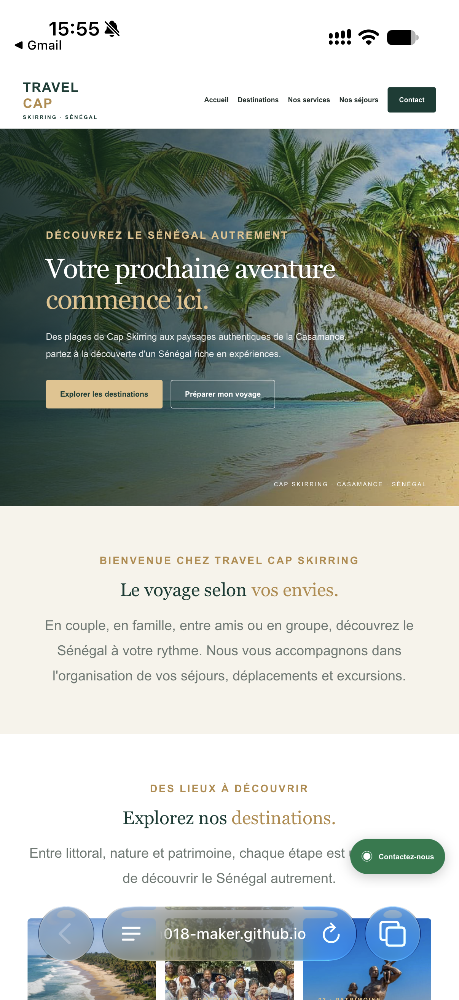

Sciences de l’information et de la communication
Formation universitaire et compréhension des enjeux de communication.
PORTFOLIO · 2026
Issu d'une formation en Sciences de l'information et de la communication à l'UAM, au sein de l'UFR TECNA, j'ai suivi un parcours en infographie et communication en L1 et L2, puis une spécialisation en communication numérique et multimédia en L3.
Dakar, Sénégal · Disponible pour de nouvelles opportunités
PRÉSENTATION
Ma formation en Sciences de l'information et de la communication m'a permis d'aborder différentes dimensions de la communication, notamment la production et la circulation de l'information, les médias, les publics et les usages du numérique.
À l'UAM, au sein de l'UFR TECNA, j'ai suivi un parcours en infographie et communication en L1 et L2, avant de me spécialiser en communication numérique et multimédia en L3.
J'ai mis en pratique certaines de mes connaissances à travers plusieurs projets, notamment la création de sites web pour MERVEILLES – Secrets de Femme et Travel Cap Skirring. Ces réalisations m'ont permis de travailler sur la présentation des contenus, l'organisation de l'information, les éléments visuels et les moyens de contact en ligne.
Je souhaite poursuivre mon apprentissage, approfondir mes connaissances en communication numérique et multimédia et développer progressivement mes compétences dans la conception de projets numériques.
Formation universitaire et compréhension des enjeux de communication.
Formation spécialisée et mise en pratique à travers des projets.
Conception de sites, organisation des contenus et intégration visuelle.
PARCOURS ACADÉMIQUE
Un parcours universitaire en Sciences de l’information et de la communication, avec une évolution vers la communication numérique.

UAM · UFR TECNA
Formation en Sciences de l'information et de la communication, avec un parcours initial en infographie et communication suivi d'une spécialisation en communication numérique et multimédia.
EXPÉRIENCES PROFESSIONNELLES
Des expériences qui m’ont permis de découvrir différents environnements professionnels et de mettre en pratique plusieurs compétences.
Communication digitale et appui à la relation client
Stagiaire — Cellule informatique
Remarque : les périodes indiquées se chevauchent, car les activités dans les deux structures se déroulaient en alternance.
SÉLECTION DE TRAVAUX
Quelques projets qui illustrent mes expériences en conception web, organisation des contenus et communication.

Création et mise en ligne d'un site web réalisée à la demande du propriétaire de MERVEILLES – Secrets de Femme. Le site présente les produits de l'entreprise, organise les catégories et les visuels et permet aux visiteurs d'accéder au lien de commande via WhatsApp Business.
Le propriétaire a formulé un retour positif sur le travail réalisé.





Conception et mise en ligne d’un site consacré à la présentation de destinations et de services touristiques à Cap Skirring. Le site comprend des visuels, une organisation des contenus et un formulaire de contact.
Le propriétaire de Travel Cap Skirring a formulé un retour positif sur le site web réalisé.



Mise en situation académique autour d’une entreprise fictive, Pharma Plus. Dans le cadre de cet exercice, j’ai joué le rôle du directeur, présenté une déclaration et répondu aux questions des journalistes.
Voir la vidéo du projetSAVOIR-FAIRE
PRENONS CONTACT
Pour discuter de mon parcours, de mes réalisations ou d’une éventuelle collaboration, vous pouvez me joindre par e-mail, WhatsApp ou consulter mon profil GitHub.